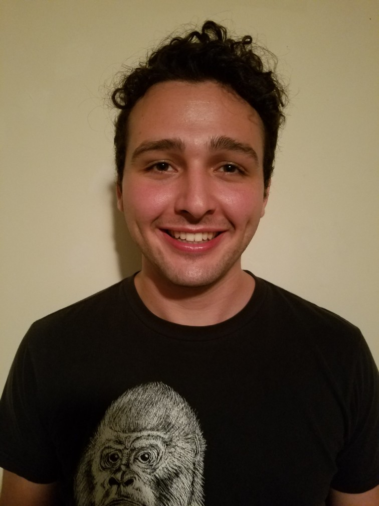

I'm a second year M.S. student in applied mathematics at UMass Amherst. My research interests are in complex adaptive systems. Specifically, I enjoy studying them in the context of unconventional computing (bio-inspired and neural computing in particular). Currently I am working both as a graduate research assistant in the Biologically Inspired Neural and Dynamical Systems Laboratory in the computer science department at UMass Amherst and as a graduate IT assistant in the department of mathematics & statistics at UMass Amherst. During my undergraduate studies I majored in pure math and minored in philosophy.